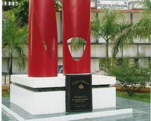

Aspiring Electronics and Telecommunications Engineer with a solid foundation
in programming languages like C, C++, HTML, and Java.
Seeking to leverage technical skills and academic knowledge to contribute
to innovative projects and achieve professional success.
Experienced in web development through personal projects
and eager to apply programming expertise to real-world applications.
Education
B.Tech in Electronics and Telecommunications
International Institute of Information Technology, Bhubaneshwar
12th
Ispat English Medium School, Sector-20, Rourkela

10th
Ispat English Medium School, Sector-20, Rourkela
Work experience
Projects
Web Development Projects
Birthday Website:
Created a dynamic website to celebrate birthdays,
featuring personalized content and interactive elements.
Movie Review Website:
Developed a platform for users to share and discuss
movie reviews, including ratings, comments, and recommendations.
Portfolio Website:
Designed and built a personal website to showcase skills,
projects, and professional achievements.
Skills
Technical Skills
Programming Languages:
C, C++, HTML, Java
Web Development:
HTML, CSS, JavaScript
Problem-Solving:
Ability to analyze problems, identify solutions, and implement effective strategies
Teamwork:
Collaborative approach to working with others and achieving shared goals
Learning:
Continuous desire to acquire new knowledge and skills
Achievements
Successful Completion of Personal Projects:
Developed functional web applications
(birthday website, movie review website, portfolio website)
demonstrating proficiency in programming languages
and web development frameworks.
Gained hands-on experience in project planning,
implementation, and testing.